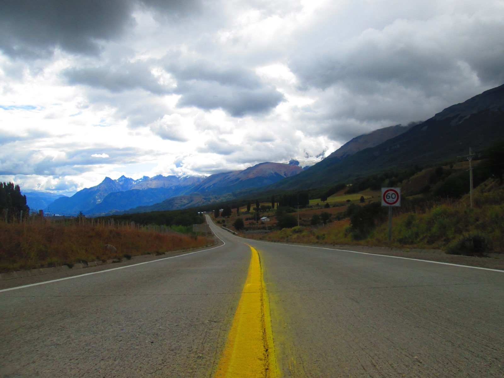

Some roads take you to a place; others are the place. The Carretera Austral, Chile's Route 7, belongs to the second kind. It links Puerto Montt with Villa O'Higgins past lakes, hanging glaciers, turquoise rivers and forests that seem to go on forever. Many call it the most beautiful drive in Chile, and a Carretera Austral road trip is one of the most rewarding ways to experience Patagonia.
This guide will help you plan: how long the road really is, which ferries you need, what is changing under the 2026–2030 paving plan, and what you should not miss around Coyhaique, the largest city in the Aysén Region.
The road opened to traffic in 1988. By 1996 it reached Puerto Yungay, and in 2000 the last 100 km to Villa O'Higgins, its end point, were opened.
You will find two figures for its length, and both are genuine:
Which one should you use? For planning, go with the ministry's number, the most recent official figure. Other 2026 sources give different paved percentages (45%, for instance), so do not be surprised by conflicting numbers. What matters on the ground is that a significant share of the road is still gravel, and that shapes your speed, your choice of vehicle and your timings.

To drive the full Carretera Austral you need to cross by ferry at three points:
| Crossing | Approximate duration | Note |
|---|---|---|
| Caleta La Arena–Caleta Puelche | About 30 minutes | Near Puerto Montt |
| Hornopirén–Caleta Gonzalo | About 5 hours | Seasonal |
| Puerto Yungay–Río Bravo | About 50 minutes | Free |
Check timetables and book ahead, especially the Hornopirén–Caleta Gonzalo crossing, which only runs in season. If you would rather skip the northern section, fly into Balmaceda and start in Coyhaique: see our guide on how to get to Coyhaique.
On 30 April 2026, President Kast and Public Works Minister Martín Arrau announced the "Ruta Austral: Soberanía que conecta" plan. These are the key points, according to the ministry:
Some work has already begun. In August 2026, paving started on 16.2 km between Bahía Murta and the El Belga Bridge, on the way to Puerto Río Tranquilo. The El Manso Bridge was 16% complete, with completion expected in April 2028. For travellers this means two things: the road will get easier year by year and, in the meantime, you should allow extra time for roadworks.
Coyhaique makes a good base for the central section of the route. These are the main stops, with approximate distances from the city:
To the north, 165 km from Coyhaique on Route 7, lies Queulat National Park. Created in 1983, it protects 154,093 hectares in the municipalities of Cisnes and Lago Verde; the nearest village is Puyuhuapi. Its signature sight is the Ventisquero Colgante, or Hanging Glacier, which clings to the rock and spills in waterfalls towards Laguna Témpanos.
There is no mobile signal and no food for sale in Queulat, so bring what you need. The campsite in the Ventisquero Colgante sector has been closed since 17 April 2026 until further notice. Check fees and opening hours at pasesparques.cl.
There is no official date, but tourism guides and the parks agree that high season runs from November or December to March. That is when seasonal ferries, campsites and trails are operating. Several CONAF trails close from May to September, so travelling outside those months is possible, just with fewer options.
The historical figure is about 1,240 km from Puerto Montt to Villa O'Higgins. MOP-Vialidad reported about 1,058 km in April 2026, with 58% paved.
Partly. According to the ministry, 614.5 km are paved and 443.5 km are still to be paved. The 2026–2030 plan adds 150.4 km of permanent paving.
From November or December to March, when seasonal ferries, campsites and trails are running.
Coyhaique National Reserve, Río Simpson National Reserve, Cerro Castillo National Park, Queulat National Park to the north and the Marble Caves to the south.
Driving the Carretera Austral tends to leave you wanting to stay. Inmobiliaria El Roble has two projects in Aysén, with legal advice throughout the purchase process and interest-free direct financing: Horizontes de Mañihuales, 4 plots of 0.53 to 1 ha on the Mañihuales River, with access by public road, 1 hour 10 minutes north of Coyhaique and 10 minutes from Villa Mañihuales, sold off-plan while SAG approval is obtained; and Parcelas Don Guillermo, on the Emperador Guillermo River, right on the Carretera Austral, where a single plot remains: B11, of 9,500 m². See all our projects.